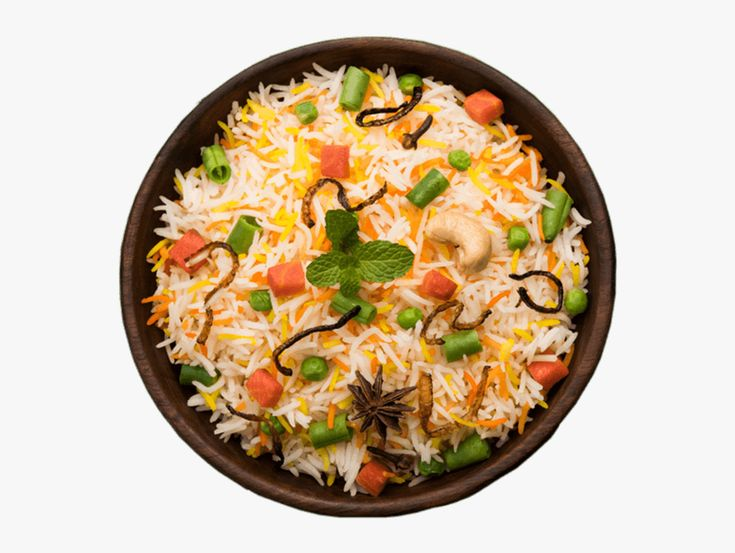

Vegetable Biryani

A fragrant and flavorful rice dish made with basmati rice, mixed vegetables, and aromatic spices. It's a wholesome and satisfying meal that can be enjoyed on its own or paired with raita or salad. Perfect for special occasions or a comforting weeknight dinner.
- Preparation Time: 20 minutes
- Cooking Time: 40 minutes
- Total Time : 1 hour
- Servings: 4 servings
- course : Main Course
- Difficulty: Medium
Ingredients:
For the rice- 2 cup basmati rice
- 4 cup water
- 1 bay leaf
- 2 green cardamom pods
- 1 cinnamon stick
- 4 cloves
- 1 teaspoon salt
- 2 cups mixed vegetables (carrots, peas, beans, etc.)
- 1 onion, thinly sliced
- 2 tomatoes, chopped
- 1/2 cup green peas
- 1/2 cup cauliflower florets
- 10 green beans, chopped
- 2 tablespoons vegetable oil or ghee
- 1 large onion , thinly sliced
- 2 tomatoes, chopped
- 2 green chilies, sliced
- 1 teaspoon cumin seeds
- 1 teaspoon ginger-garlic paste
- 1 teaspoon turmeric powder
- 1 teaspoon red chili powder
- 1 teaspoon garam masala
- Salt to taste
- Fresh coriander leaves, chopped
- Fried onions (optional)
Instructions:
- Rinse the basmati rice under cold water until the water runs clear. Soak the rice in water for 30 minutes, then drain.
- Heat oil or ghee in a large pan over medium heat. Add cumin seeds and let them splutter.
- Add sliced onions and sauté until golden brown.
- Add ginger-garlic paste and sauté for another minute.
- Add chopped tomatoes and cook until they turn soft and mushy.
- Add turmeric powder, red chili powder, garam masala, and salt. Mix well.
- Add mixed vegetables and cook for 5-7 minutes until they are slightly tender.
- Add the soaked and drained rice to the pan. Gently mix everything together.
- Add 2 cups of water and bring it to a boil.